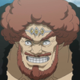
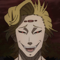
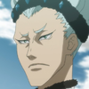
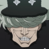

Oito Generais Brilhantes

Os Oito Generais Brilhantes são os mais fortes Mage Warriors dentro do Reino do Diamante, tendo autoridade para comandar um grande número de soldados e respeito suficiente para não ter suas ordens questionadas.
Os generais da "Velha Geração" consistiam em Broccos, Yagos e Ragus que haviam obtido seu nível de poder e posição através dos métodos tradicionais de treinamento, prática e experiência no campo de batalha. Enquanto os Cinco Generais da "Nova Geração" são todos magos que foram pessoalmente modificados e experimentados por Morris , que conseguiu aumentar com sucesso suas habilidades e poderes naturais e ainda deu a eles acesso a habilidades novas e únicas, como está em os casos com Marte e Ladros.
Membros do Oito Generais Brilhantes
|
NÍVEL |
MEMBRO |
NOME |
|---|---|---|
|
1º General |
 |
Broccos |
|
2º General |
 |
Ladros |
|
3º General |
 |
Ragus |
|
4º General |
 |
Yagos |